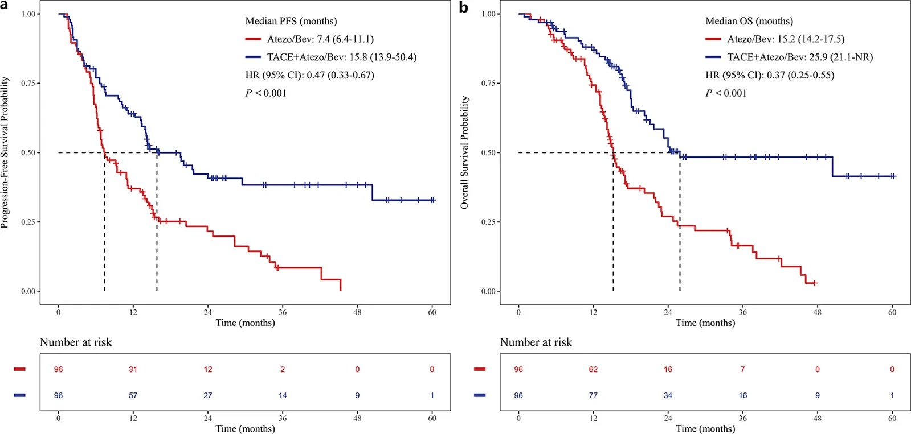
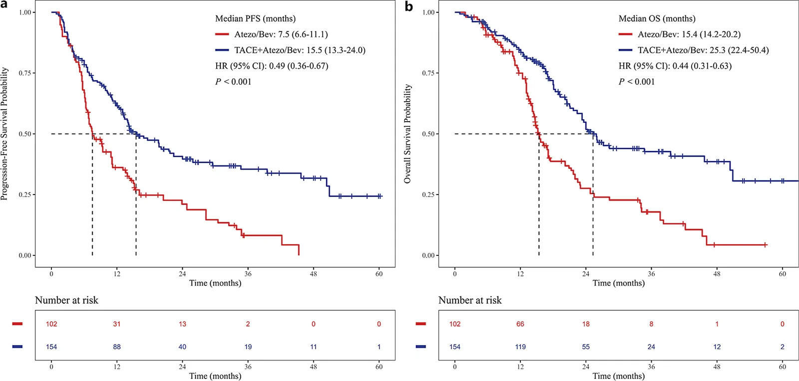
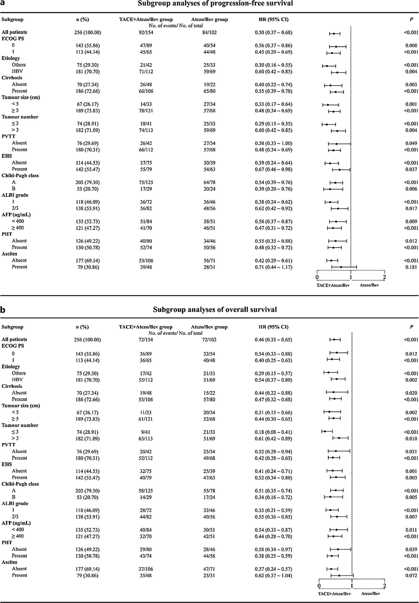

IR Weekly Literature Digest · Full-text analysis
Atezolizumab plus Bevacizumab with or without Transarterial Chemoembolization as First-Line Treatment for Barcelona Clinic Liver Cancer Stage C Hepatocellular Carcinoma: A Nationwide Multicenter Retrospective Study.
Liver Cancer. 2026 Sep 5. Online ahead of print. doi: 10.1159/lic/admag010
Read the original articlePubMedOverview
This nationwide, 14-centre retrospective cohort study compared first-line atezolizumab plus bevacizumab (Atezo/Bev) with or without TACE in 256 Chinese patients with BCLC stage C HCC (154 TACE+Atezo/Bev, 102 Atezo/Bev alone). Adding TACE was associated with higher ORR and longer PFS and OS in the primary cohort, and in propensity-matched and sIPTW-weighted cohorts. Primary cohort median OS was 24.3 vs 15.2 months (HR 0.46, 95% CI 0.33-0.65). Grade 3/4 adverse events were numerically but not significantly more frequent with TACE, and AST elevation was more common. The effect sizes are large and consistent across analytic approaches, but the design is observational and the results are vulnerable to selection and immortal-time bias.
Study design
Retrospective, nationwide, multicentre cohort at 14 Chinese hospitals, October 2020 to January 2025, final follow-up 30 July 2025. Treatment allocation was by real-world clinical decision, with no randomization or blinding. Primary cohort n=256. Confounding was handled by 1:1 PSM without replacement (caliper 0.2) giving 96 per arm, and by stabilized IPTW. The PS covariates were sex, age, ECOG PS, aetiology, tumour number, tumour size, PVTT, EHS, cirrhosis, AFP and Child-Pugh class. Sensitivity analyses for time-dependent TACE exposure were an sIPTW time-dependent Cox model and a 1-month landmark analysis. Primary endpoint was OS from start of Atezo/Bev. Secondary endpoints were PFS, ORR (mRECIST, two radiologists with at least 10 years' experience at each centre) and TRAEs (CTCAE v5.0). Imaging follow-up was every 4-8 weeks. The study followed STROBE and was approved by the ethics committee with consent waived.
Patients
Inclusion: age 18-80, HCC confirmed by histology or AASLD criteria, BCLC stage C, ECOG PS <2, Child-Pugh A or B, at least one mRECIST-measurable intrahepatic lesion. TACE-group patients had to have their first TACE within 1 month before or after starting Atezo/Bev, with at least one Atezo/Bev cycle after TACE. Exclusions: prior antitumour therapy, other malignancy within 5 years, uncontrollable coagulopathy or refractory ascites, significant varices or red wale marks, and loss to follow-up or incomplete records. Baseline (primary cohort): HBV aetiology 72.7% vs 67.6%; PVTT 72.7% vs 66.7%, with Vp3/4 in 54.5% vs 52.9%; EHS 51.3% vs 61.8%; tumour size >=5 cm 78.6% vs 66.7% (p=0.048, SMD 0.269); >3 tumours 73.4% vs 67.6%; Child-Pugh B 18.8% vs 23.5%; ECOG 1 42.2% vs 47.1%. Before adjustment, the TACE group had larger tumours, less cirrhosis and less EHS. After PSM and sIPTW all SMDs were below 0.1, except ascites in sIPTW (0.089, still below 0.1). TACE modality: 90 cTACE, 64 DEB-TACE (CalliSpheres or HepaSpheres). 104 patients (67.5%) had >=3 TACE sessions. TACE preceded Atezo/Bev in 139 (90.3%), median interval 7.0 days.
Intervention and comparator
TACE+Atezo/Bev: superselective cTACE (Lipiodol 2-20 mL emulsified with chemotherapy, with optional particulate embolics such as blank microspheres, gelatin sponge or PVA) or DEB-TACE (100-300 or 300-500 um beads loaded with chemotherapy, to stasis). The choice was made by the local IR or MDT according to guidelines, patient condition, preference and cost. Vp3/4 PVTT patients received TACE only with acceptable PS, preserved liver reserve, adequate portal flow or collaterals, and identifiable feeding arteries. EHS patients received TACE when intrahepatic disease was dominant. TACE was repeated on demand if viable tumour or new lesions appeared, and stopped for Child-Pugh >9, ECOG >2, uncontrolled ascites, coagulopathy, encephalopathy, or progression after three sessions. Atezolizumab 1,200 mg plus bevacizumab 15 mg/kg every 3 weeks in both arms. Comparator: Atezo/Bev alone.
Results
| Median follow-up | 26.9 months (95% CI 25.3-33.7) in TACE+Atezo/Bev vs 35.3 months (95% CI 33.5-NR) in Atezo/Bev alone (p=0.543). Deaths: 72/154 (46.8%) vs 72/102 (70.6%). |
|---|---|
| Overall survival, primary cohort (primary endpoint) | Median OS 24.3 months (95% CI 21.7-45.7) vs 15.2 months (95% CI 14.2-20.2); p<0.001; HR 0.46 (95% CI 0.33-0.65). |
| OS, PSM cohort (96 vs 96) | Median OS 25.9 months (95% CI 21.1-NR) vs 15.2 months (95% CI 14.2-17.5); p<0.001; HR 0.37 (95% CI 0.25-0.55). |
| OS, sIPTW cohort | Median OS 25.3 months (95% CI 22.4-50.4) vs 15.4 months (95% CI 14.2-20.2); p<0.001; HR 0.44 (95% CI 0.31-0.63). The sIPTW time-dependent Cox model and the 1-month landmark analysis were reported to support the OS benefit (suppl. Figs. S4-S5, numbers not given in the main text). |
| PFS, primary cohort | Median PFS 14.7 months (95% CI 13.0-22.4) vs 7.5 months (95% CI 6.8-11.1); p<0.001; HR 0.50 (95% CI 0.37-0.68). |
| PFS, PSM and sIPTW | PSM: 15.8 months (95% CI 13.9-50.4) vs 7.4 months (95% CI 6.4-11.1); HR 0.47 (95% CI 0.33-0.67); p<0.001. sIPTW: 15.5 months (95% CI 13.3-24.0) vs 7.5 months (95% CI 6.6-11.1); HR 0.49 (95% CI 0.36-0.67); p<0.001. |
| ORR (mRECIST) | Primary 48.7% vs 31.4% (p=0.009); PSM 51.0% vs 31.2% (p=0.008); sIPTW 50.6% vs 32.0% (p=0.005). |
| Multivariable Cox, primary cohort | Treatment was independently associated with PFS (HR 0.45, 95% CI 0.33-0.62, p<0.001) and OS (HR 0.45, 95% CI 0.32-0.63, p<0.001). Adverse factors for OS: tumour size >=5 cm HR 2.84 (1.83-4.39); tumour number >3 HR 1.91 (1.27-2.87); EHS HR 1.72 (1.21-2.44); AFP >=400 HR 1.50 (1.07-2.12); ECOG 1 HR 1.52 (1.09-2.14). PVTT and Child-Pugh class were not prognostic on univariate analysis. |
| Subgroups | Benefit was consistent across most subgroups, except ascites (PFS HR 0.71, 95% CI 0.44-1.17, p=0.181; OS HR 0.62, 95% CI 0.37-1.04, p=0.072). PVTT: PFS 14.3 vs 7.5 months (HR 0.48), OS 25.3 vs 15.2 months (HR 0.42), both p<0.001. EHS: PFS 11.7 vs 7.4 months (HR 0.67, p=0.037), OS 21.7 vs 15.2 months (HR 0.52, p=0.003). |
| Exploratory TACE comparisons within the TACE arm | cTACE vs DEB-TACE: PFS 15.8 vs 14.3 months (HR 1.13, 95% CI 0.75-1.70, p=0.572); OS 24.0 vs 26.1 months (HR 0.82, 95% CI 0.51-1.30, p=0.399). 1-2 vs >=3 sessions: PFS 15.8 vs 14.2 months (p=0.200), OS 24.3 vs 25.3 months (p=0.675). TACE before vs after Atezo/Bev: PFS 14.3 vs 34.7 months (p=0.685), OS 24.3 vs 34.7 months (p=0.605); only 15 patients had TACE after Atezo/Bev. |
Key figures


| | Primary cohort | PSM cohort | sIPTW cohort | |||||||||
|---|---|---|---|---|---|---|---|---|---|---|---|---|
| TACE+Atezo/Bev (N = 154) | Atezo/Bev (N = 102) | p value | SMD | TACE+Atezo/Bev (N = 96) | Atezo/Bev (N = 96) | p value | SMD | TACE+Atezo/Bev (N = 154) | Atezo/Bev (N = 102) | p value | SMD | |
| Age, years | | | 1.000 | 0.002 | | | 0.999 | 0.022 | | | 0.932 | 0.011 |
| <60 | 98 (63.6) | 65 (63.7) | | | 61 (63.5) | 62 (64.6) | | | 98 (63.8) | 66 (64.3) | | |
| ≥60 | 56 (36.4) | 37 (36.3) | | | 35 (36.5) | 34 (35.4) | | | 56 (36.2) | 36 (35.7) | | |
| Sex | | | 0.433 | 0.124 | | | 0.999 | 0.032 | | | 0.930 | 0.011 |
| Male | 139 (90.3) | 88 (86.3) | | | 85 (88.5) | 84 (87.5) | | | 136 (88.6) | 90 (88.3) | | |
| Female | 15 (9.7) | 14 (13.7) | | | 11 (11.5) | 12 (12.5) | | | 18 (11.4) | 12 (11.7) | | |
| ECOG PS | | | 0.524 | 0.098 | | | 0.999 | 0.021 | | | 0.881 | 0.020 |
| 0 | 89 (57.8) | 54 (52.9) | | | 50 (52.1) | 51 (53.1) | | | 87 (56.6) | 59 (57.6) | | |
| 1 | 65 (42.2) | 48 (47.1) | | | 46 (47.9) | 45 (46.9) | | | 67 (43.4) | 43 (42.4) | | |
| Aetiology | | | 0.463 | 0.111 | | | 0.752 | 0.068 | | | 0.964 | 0.006 |
| Others | 42 (27.3) | 33 (32.4) | | | 27 (28.1) | 30 (31.2) | | | 45 (29.1) | 30 (29.4) | | |
| HBV | 112 (72.7) | 69 (67.6) | | | 69 (71.9) | 66 (68.8) | | | 109 (70.9) | 72 (70.6) | | |
| Cirrhosis | | | 0.123 | 0.219 | | | 0.617 | 0.096 | | | 0.847 | 0.026 |
| Absent | 48 (31.2) | 22 (21.6) | | | 26 (27.1) | 22 (22.9) | | | 42 (27.0) | 27 (25.9) | | |
| Present | 106 (68.8) | 80 (78.4) | | | 70 (72.9) | 74 (77.1) | | | 112 (73.0) | 75 (74.1) | | |
| Tumour size, cm | | | 0.048 | 0.269 | | | 0.630 | 0.093 | | | 0.927 | 0.012 |
| <5 | 33 (21.4) | 34 (33.3) | | | 25 (26.0) | 29 (30.2) | | | 41 (26.4) | 28 (27.0) | | |
| ≥5 | 121 (78.6) | 68 (66.7) | | | 71 (74.0) | 67 (69.8) | | | 113 (73.6) | 74 (73.0) | | |
| Tumour number | | | 0.396 | 0.126 | | | 0.999 | <0.001 | | | 0.860 | 0.024 |
| ≤3 | 41 (26.6) | 33 (32.4) | | | 30 (31.2) | 30 (31.2) | | | 45 (29.4) | 31 (30.4) | | |
| >3 | 113 (73.4) | 69 (67.6) | | | 66 (68.8) | 66 (68.8) | | | 109 (70.6) | 71 (69.6) | | |
| PVTT | | | 0.368 | 0.132 | | | 0.999 | <0.001 | | | 0.996 | <0.001 |
| Absent | 42 (27.3) | 34 (33.3) | | | 32 (33.3) | 32 (33.3) | | | 46 (30.0) | 31 (30.0) | | |
| Present | 112 (72.7) | 68 (66.7) | | | 64 (66.7) | 64 (66.7) | | | 108 (70.0) | 71 (70.0) | | |
| Vp1 | 6 (3.9) | 3 (2.9) | | | 4 (4.2) | 3 (3.1) | | | 6 (3.8) | 4 (3.9) | | |
| Vp2 | 22 (14.3) | 11 (10.8) | | | 10 (10.4) | 11 (11.5) | | | 20 (13.3) | 13 (13.1) | | |
| Vp3 | 57 (37.0) | 35 (34.3) | | | 35 (36.5) | 32 (33.3) | | | 55 (35.4) | 35 (34.3) | | |
| Vp4 | 27 (17.5) | 19 (18.6) | | | 15 (15.6) | 18 (18.8) | | | 27 (17.4) | 19 (18.6) | | |
| EHS | | | 0.128 | 0.212 | | | 0.662 | 0.084 | | | 0.982 | 0.003 |
| Absent | 75 (48.7) | 39 (38.2) | | | 43 (44.8) | 39 (40.6) | | | 70 (45.7) | 46 (45.5) | | |
| Present | 79 (51.3) | 63 (61.8) | | | 53 (55.2) | 57 (59.4) | | | 84 (54.3) | 56 (54.5) | | |
| Child-Pugh class | | | 0.453 | 0.115 | | | 0.999 | 0.025 | | | 0.962 | 0.006 |
| A | 125 (81.2) | 78 (76.5) | | | 73 (76.0) | 74 (77.1) | | | 122 (79.5) | 81 (79.2) | | |
| B | 29 (18.8) | 24 (23.5) | | | 23 (24.0) | 22 (22.9) | | | 32 (20.5) | 21 (20.8) | | |
| ALBI grade | | | 0.895 | 0.033 | | | 0.999 | 0.021 | | | 0.957 | 0.007 |
| 1 | 72 (46.8) | 46 (45.1) | | | 41 (42.7) | 42 (43.8) | | | 71 (46.1) | 47 (46.5) | | |
| 2/3 | 82 (53.2) | 56 (54.9) | | | 55 (57.3) | 54 (56.2) | | | 83 (53.9) | 55 (53.5) | | |
| AFP, ng/mL | | | 0.558 | 0.091 | | | 0.885 | 0.042 | | | 0.968 | 0.005 |
| <400 | 84 (54.5) | 51 (50.0) | | | 52 (54.2) | 50 (52.1) | | | 81 (52.6) | 54 (52.9) | | |
| ≥400 | 70 (45.5) | 51 (50.0) | | | 44 (45.8) | 46 (47.9) | | | 73 (47.4) | 48 (47.1) | | |
| PHT | | | 0.344 | 0.137 | | | 0.885 | 0.042 | | | 0.626 | 0.064 |
| Absent | 80 (51.9) | 46 (45.1) | | | 46 (47.9) | 44 (45.8) | | | 75 (48.6) | 46 (45.4) | | |
| Present | 74 (48.1) | 56 (54.9) | | | 50 (52.1) | 52 (54.2) | | | 79 (51.4) | 56 (54.6) | | |
| Ascites | | | 1.000 | 0.017 | | | 0.757 | 0.067 | | | 0.495 | 0.089 |
| Absent | 106 (68.8) | 71 (69.6) | | | 64 (66.7) | 67 (69.8) | | | 104 (67.5) | 73 (71.6) | | |
| Present | 48 (31.2) | 31 (30.4) | | | 32 (33.3) | 29 (30.2) | | | 50 (32.5) | 29 (28.4) | | |

Safety
CTCAE v5.0. Any-grade TRAEs: 119 (77.3%) vs 74 (72.5%), p=0.390. Grade 3/4: 60 (39.0%) vs 34 (33.3%), p=0.360. TACE+Atezo/Bev had more any-grade abdominal pain (35.7% vs 20.6%, p=0.010), ALT elevation (29.2% vs 17.6%, p=0.035) and AST elevation (37.0% vs 18.6%, p=0.002). Grade 3/4 AST elevation was higher (15.6% vs 6.9%, p=0.036). Grade 3/4 bilirubin elevation was 9.1% vs 7.8% (p=0.727) and grade 3/4 ALT elevation 9.1% vs 6.9% (p=0.525). Gastrointestinal haemorrhage: any grade 13.6% vs 12.7% (p=0.837), grade 3/4 6.5% vs 5.9% (p=0.843). Among 84 Vp3/4 PVTT patients in the TACE arm, 17 (20.2%) had at least one grade 3/4 liver-related AE (bilirubin 10.7%, albumin 4.8%, ALT 9.5%, AST 17.9%). No treatment-related deaths. No significant AE differences between cTACE and DEB-TACE. The AE comparison was not adjusted for multiplicity, and TACE-specific complications such as post-embolization syndrome, liver failure or abscess were not specifically reported.
Strengths
- Relatively large BCLC C-only cohort, including many patients with Vp3/4 PVTT and EHS, groups usually excluded from TACE+systemic trials such as LEAP-012 and EMERALD-1.
- Multicentre nationwide design with standardized mRECIST assessment by two experienced radiologists per centre.
- Consistent effect direction and size across the unadjusted, PSM and sIPTW analyses, plus multivariable Cox and subgroup analyses.
- Explicit sensitivity analyses for time-dependent TACE exposure (time-dependent Cox, 1-month landmark) address immortal-time bias, at least partly.
- Detailed reporting of TACE technique, indications and stopping criteria, and exploratory comparison of cTACE vs DEB-TACE, session number and timing.
- Long median follow-up (26.9 and 35.3 months) allows meaningful OS estimates.
Limitations
- Retrospective, non-randomized. TACE was chosen by clinical judgement, so residual indication bias is likely (patients judged fit for TACE may have had better arterial-dominant disease, liver reserve or functional status). PS covariates omitted ALBI grade, PHT and ascites, which are important prognostic variables; the sIPTW ascites SMD was 0.089, near the threshold.
- Immortal-time and survivor bias: TACE patients had to receive at least one Atezo/Bev cycle after TACE, and up to 1 month after starting Atezo/Bev could elapse before TACE. The authors did sensitivity analyses, but the results are only in the supplement, and the 1-month landmark may not remove all bias. The exclusion of patients lost to follow-up or with incomplete records may also introduce selection bias.
- Follow-up differed (median 26.9 vs 35.3 months), and the Atezo/Bev arm had more deaths (70.6% vs 46.8%). Median OS in the control arm (15.2 months) was lower than in IMbrave150 (19.2 months) and in many contemporary series, so the control arm may be a poor-prognosis group, which would inflate the HR. The comparator was Atezo/Bev alone rather than TACE alone.
- The sIPTW cohort kept the original N, so its p-values are not comparable with a true sample size and may overstate precision. The PSM cohort discarded 58 TACE patients.
- Post-progression and subsequent therapies (suppl. Table 1) were not shown in the main text; imbalances in subsequent locoregional or systemic therapy could drive OS differences.
- Subgroup, TACE-type, session-number and timing analyses are exploratory and underpowered (e.g., 15 patients with TACE after Atezo/Bev). The ascites subgroup finding of a non-significant benefit may reflect lack of power.
- AEs were retrospectively collected, with likely underascertainment, and the grade 3/4 AE rate (39.0%) is much lower than in prospective trials such as TALENTACE (63.8%). Liver-function-specific outcomes such as Child-Pugh deterioration were not analysed, and post-TACE complications were not reported.
- Heterogeneity in TACE technique across 14 centres, a mostly HBV, Chinese population and a possible COVID-related effect on assessments limit generalizability. Patients had ECOG PS 0-1 and were selected for Child-Pugh A/B without refractory ascites or high-risk varices. The study is not eligible for assessing 'synergy'. The OS effect (HR 0.37-0.46) is implausibly large relative to the PFS benefit and to the negative final OS results of EMERALD-1, which argues for confounding.
In context
The authors place the results alongside IMbrave150 (Atezo/Bev median PFS 6.9, OS 19.2 months; BCLC C subgroup PFS 6.5 months, ORR 27%), the CHANCE2201 study (control arm PFS 7.4, OS 15.9 months), and other retrospective TACE+Atezo/Bev series (BCLC C subgroup: PFS 12.8, OS 25.2 months; CHANCE023 overall PFS 19.23, OS 29.97 months). They note that median PFS with TACE+Atezo/Bev (14.7 months) resembles LEAP-012 (14.6) and EMERALD-1 (15.0), although those trials excluded PVTT/EHS or only included Vp1-2. They acknowledge that final EMERALD-1 OS was negative (29.9 vs 33.3 months, HR 1.10, 95% CI 0.87-1.39), indicating that PFS gains may not translate to OS. EMERALD-3 showed improved PFS (13.0 vs 9.8 months, HR 0.70) with immature OS. TALENTACE reported a median PFS of 11.3 months with a higher grade 3-5 AE rate (63.8%). They argue the biological rationale (TACE-induced antigen release plus VEGF blockade normalizing vessels) is plausible but its clinical relevance needs validation.
Implications for practice
This study adds hypothesis-generating support for combining TACE with Atezo/Bev in carefully selected BCLC C patients, including those with PVTT and EHS, which is relevant because phase III trials of TACE plus systemic therapy excluded most of these groups. The consistent ORR, PFS and OS advantage and the similar bleeding rates are encouraging, and the toxicity pattern (more abdominal pain and transaminase elevation, no excess GI haemorrhage or treatment-related deaths) is what would be expected from TACE. However, the HR for OS of about 0.4-0.5 is probably inflated by selection and immortal-time bias, so confidence should be moderate to low. It should not displace Atezo/Bev alone as the standard for BCLC C. In practice, TACE could be considered through MDT discussion for patients with a dominant intrahepatic burden, preserved liver function (Child-Pugh A, no refractory ascites) and adequate portal flow or collaterals when Vp3/4. Caution is needed with ascites, where the benefit was not shown, and in Child-Pugh B. Randomized trials, ideally with comparison against TACE-based approaches and defined sequencing, are needed before this becomes routine. No firm conclusion can be drawn about cTACE vs DEB-TACE, number of sessions, or timing.